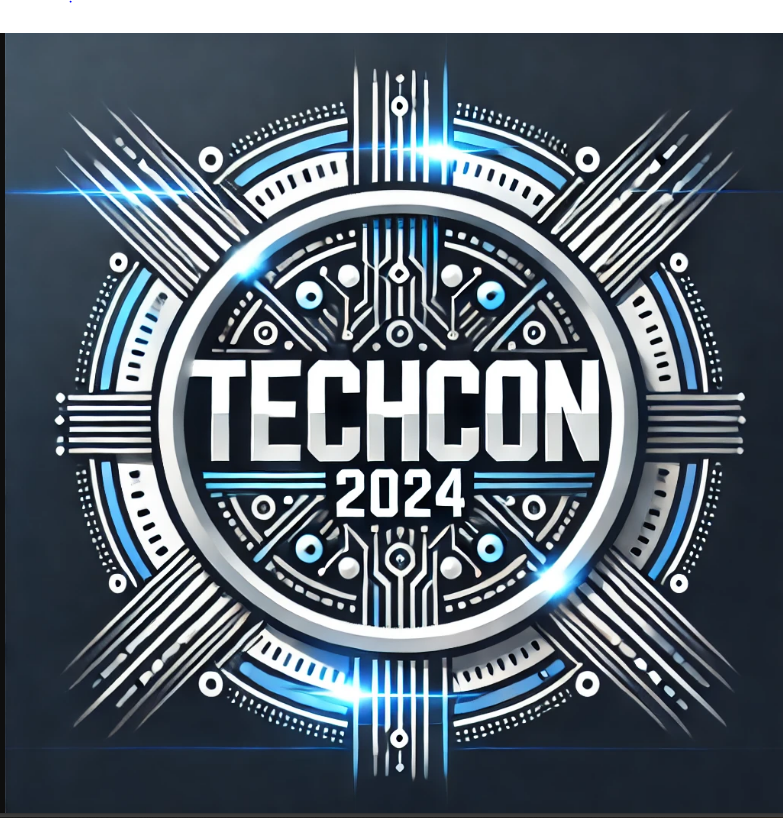

History
TechCon was established in 2015 to bring together the brightest minds in technology, providing a platform for knowledge exchange and innovation. Over the years, TechCon has grown into a global event, attracting professionals and enthusiasts from around the world.
